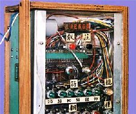

高額賞金で人気があるそうだが、σ(-_-)は好きくない。何がキライだと云って、司会者の「ファイナルアンサー？」というフレーズ。いったん回答した答えを変更することが認められていない以上、「ファイナルアンサー」もへったくれもない筈。
それと回答者が返事した後、司会者が正解・不正解を告げるまでの異常なまでの長い間。番組盛り上げ策としてやってることは承知していても、どうしても好きになれない。
＃そしたら、「アレはアメリカかイギリスの同じような番組のパクリ」だってことを聞いた。「ファイナルアンサー」はもとより、司会者が正解・不正解を告げるまでの異常なまでの長い間も、まったく同じパターンでやっているとか。
いずれにしても気に入らないので、ふだん見ることはない。しかし先日（2/19）、そのあとの番組が見たかったため、なりゆきで見てしまった。そしたらなんと麻雀に関連したクイズが出た。
問題は、「麻雀の点数計算機を発明し、特許まで取った政治家がいます。それは誰でしょう」というもの。
４者択一で、森喜郎、橋本龍太郎、小沢一郎、菅直人の４人から選ぶ。そういう事に興味がある愛好家なら知っている可能性はあるとしても、回答者はマジメそうな自衛隊員。それでぜったいに知らないだろうなと思っていた。
案の定分からないというので家族に電話したりしたが、家族も分からない。それでも家族は「カンで菅直人」なんてダジャレと云っていたが、そう返事した頃には、電話が切れていた。
そこで回答者は、「いちばんバクチが好きそうな政治家」ということで「森喜郎」を選択したが、不正解だった。そのため獲得した250万円が100万円となってしまった。う〜ん、あのときσ(-_-)がいたら500万円をゲットさせてやったのに。(^-^；
で、正解はダジャレ通り、菅直人。これがその現物（麻雀博物館蔵）。商品名をジャンタックという。昭和50年に特許まで取ったそうだ

高さ50センチくらいあるような大きな機械。写真には写ってないが、下部にキ＾ボードのような入力装置があって、符の合計と翻数を入力すると、得点が表示されるというもの。菅直人は東工大出身。この計算機は菅直人がアイデアを出し、友人が回路を設計したそうだ。
菅氏によれば、「商品化も目指したが、特許を取得した頃には政治の世界に飛び込んでおり、その時間がなかったので断念した」という。しかし時間があっても商品化などは無理だったろう。
といっても機械の大きさや販売価格の問題ではない。もちろん現在なら、手に平サイズでもっといいものができるに決まっている。しかし点数計算ができないというのは、まず小符の積算ができないという事。逆に云えば、小符の積算ができて、それを入力することができるくらいなら機械は要らないことになる。
要するに、問題は機械の性能や価格ではなく、こんな機械が必要と思われるような麻雀の点数計算法のほうに問題がある。
麻雀というゲームの面白さのポイントは、手作り、攻め、降り、回し打ち、ブラフをかますなど、プレーヤー同士の攻防にある。間違っても点数計算の煩雑さなどという部分にはない。もし面白さのポイントが得点算出の細かさにあるというなら、点数はいまでも精算法で算出されている筈。
＃精算法
いっさいの切り上げを行わないで、22符は22符、24符は24符できちんと倍々計算する方式。下記がその点数表。

いずれにしても点数計算は、攻防の結果をどう精算するかという従属的問題。そんな従属的問題で計算機まで考案したくなるようでは、本末転倒である。
これからの得点計算でも述べたが、点数計算に小符計算など必要ない。翻数だけの下記方式で充分だ。これなら計算機は要らないだろう。(^-^；
※翻数には場ゾロを含む。
| 子 |
翻数 |
親 |
| ロン（ツモ） |
|
ロン(ツモ) |
| 1000（300/500） |
三翻 |
1500（500all) |
| 2000（500/1000） |
四翻 |
3000（1000all) |
| 4000（1000/2000） |
五翻 |
6000（2000all) |
| 8000（2000/4000） |
六/七翻 |
12000（4000all) |
| 12000（3000/6000） |
八/九翻 |
18000（6000all) |
| 16000（4000/8000） |
10-12翻 |
24000（8000all) |
| 24000（6000/12000） |
13-14翻 |
36000（12000all) |
| 32000（8000/16000） |
15翻-役満 |
48000（16000all) |
※槓の有無は関係無い。
|